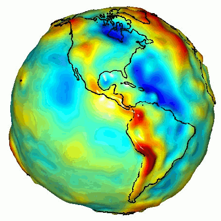

Desde un punto de vista físico
La tierra es un Geoide, que es la forma de representación más compleja y precisa de la forma de la Tierra.

Se define como la superficie equipotencial de la gravedad que coincide con el nivel medio del mar en reposo. Esto significa que el geoide tiene en cuenta las variaciones en la gravedad causadas por la distribución irregular de la masa dentro de la Tierra, como montañas, valles y diferentes densidades de materiales.